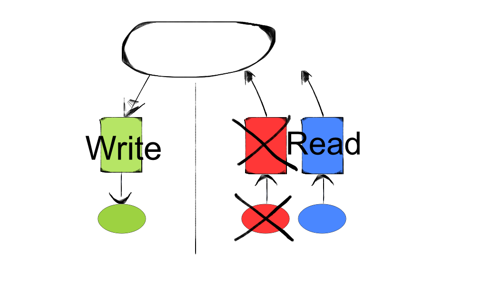

CQRS
Command Query Responsability Segregation
Pourquoi ?
Volume lecture / écriture
Forme des données
Traitement des données
Comment ?
Lecture / écriture séparés
Ecriture
Lecture
Synchronisation : Comment ?
Synchronisation : Pull
Synchronisation : Push
Avantages
Lecture / écriture séparées
Stockage sous la forme d'affichage
Data store adaptés
Plusieurs systèmes de vue
Scaling
Recronstruire les vues

Désavantages
Un système complexe